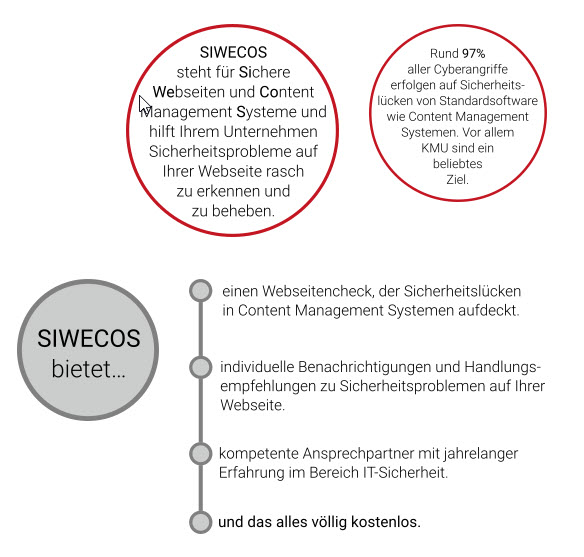

Registrieren bei Siwecos¶
Das Projekt Siwecos wurde von Eco (Verband der Internetwirtschaft) und der Ruhruniversität Bochum (RUB) ins Leben gerufen, um kleinen und mittleren Unternehmen (KMUs) die Möglichkeit zu geben, die eigenen Webauftritte auf Sicherheitslücken und evtl. vorhandene Schadware prüfen zu lassen. Dazu wurden eine Reihe von Scannern entwickelt, die Ihre Webseite auf Konfigurationsfehler und Malware hin untersucht und Ihnen Hilfestellung zum Beheben dieser Probleme gibt.
Damit Sie Ihre Domains mit den Siwecos-Scannern auf Sicherheitslücken überprüfen lassen können, ist zunächst eine Registrierung und anschließende personalisierte Anmeldung nötig. Ihre Daten werden keinesfalls an Dritte weitergegeben.
